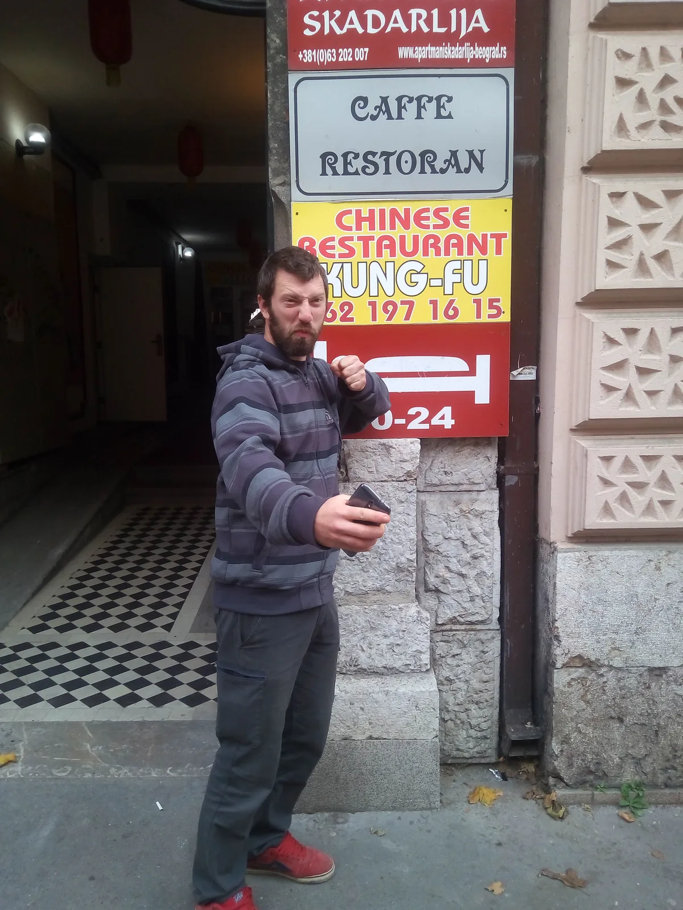

Hrtići u Beogradu
Kad za nečiji rođendan potegneš 450 kilometara, onda je jasno da je riječ o speleologu, dobrom prijatelju koji je napunio pedeset (barem toliko priznaje)

U petak smo mi Hrtići* (Ana, Španja, Tibor, Darkec i ja) krenuli za Beograd. Povod je bio 50. rođendan Dimitrija Dimitrijevića MIĆKA. To je skup speleologa u malom, samo bez predavanja, seminara, knjiga i sl. Kako je Jole iz Banja Luke rekao: „kao mali sam jednom otvorio knjigu, ugledao dlaku u njoj i od tada mi se zgadila“ pa tako u ovih par dana nije nedostajalo jedino piva, stolnog nogometa, dobre glazbe i još boljeg društva.
(*) Hrvati od milja; tako nas ekipa iz Banja Luke zove.Kad smo tek došli u Beograd, prvo smo stali da prošetamo Adom Ciganlijom (poluotok na Savi), a usput i da promijenimo kune u dinare. Sljedeća postaja je bila Mićkova kuća. Mićko nas je najsrdačnije dočekao i ugostio. Kako smo nas petero došli u popodnevnim satima, pomogli smo napraviti prostora za sve pozvane ljude. Micala su se vrata i iznosila vani u susjedov vrt skupa s namještajem, a donosile gitare, pojačala, mikrofoni i bubnjevi koje je Mićko osigurao čavlima u parket da se ne bi pomakli. Ormar s knjigama smo zamotali najlonom, sklopili krevet, a Mićko je pometeno smeće ispod kreveta samo prebacio ispod ormara. Lagano su počeli pristizati prijatelji sa svih strana, kuća se napunila i svirka je glasno krenula.
[caption id="attachment_1660" align="alignnone" width="1280"] U nas jugić služi za prijevoz do Kite, a u njih igračka u parku[/caption]Ujutro smo se uputili u razgledavanje Beograda. Prošetali smo Kalemegdanom kroz park i zidine, odakle je prelijep pogled na ušće Save u Dunav. Prošli smo kroz Knez Mihailovu ulicu, najpoznatiju šetnicu i Trg republike, središnji gradski trg da bi došli do Skadarlije, stare boemske četvrti, gdje smo popili kavu, ručali i malo se odmorili od šetnje. Autom smo išli dalje do Dedinja, do mauzoleja Josipa Broza Tita - Kuće cvijeća i Muzeja Jugoslavije.
[caption id="attachment_1658" align="alignnone" width="1280"] Unikatni poklon Mićku za 50-i rođendan[/caption]Kako je rano pao mrak i postalo hladno, išli smo nazad u kuću gdje se zabava nastavila, a ovaj put je umjesto bendova glavna atrakcija bila stolni nogomet kojeg smo to jutro vratili kroz prozor u kuću iz dvorišta, a Španja je bio pravi majstor u igranju. :)
U nedjelju ujutro bilo je vrijeme krenuti nazad prema Zagrebu. S ekipom smo sklapali dogovore o ponovnom susretu, pozdravili se, izgrlili i krenuli. Sve u svemu, ovaj vikend je bio za pamćenje, a u planu je vratiti se!
P.S. Pitala sam Mićka odakle mu taj nadimak, ali ne zna ni sam, kaže da ga tako zovu od rođenja valjda.
[gallery ids="1649,1658,1657,1660,1650,1654,1655,1653,1652,1663,1656,1666,1659,1662,1665,1661,1667,1664" type="rectangular"] I ne zaboravite: [youtube https://www.youtube.com/watch?v=JX09cXjg_WE&w=560&h=315]